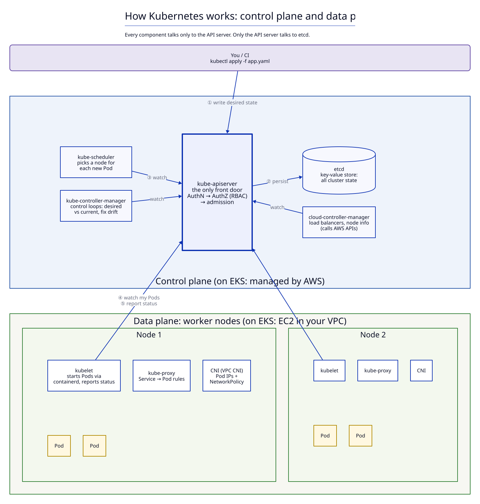
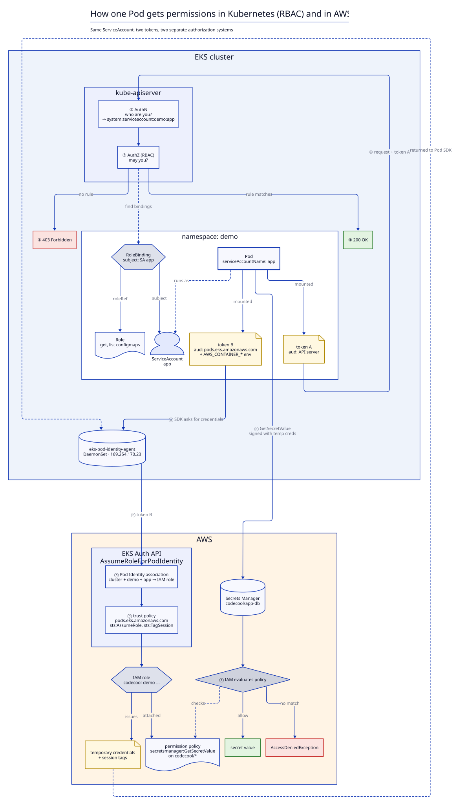

Lesson 02 · Configuration & security · about 30 minutes · instructor demo, review afterwards
Kubernetes RBAC: who may do what
kubectl auth can-i before anyone runs it. You watch a ServiceAccount that may only read ConfigMaps in demo get its yes, and its Forbidden on the Secret from lesson 01.
Recap: everything goes through the API server
Kubernetes has a "hub-and-spoke" API pattern: "All API usage from nodes (or the pods they run) terminates at the API server."[13] The scheduler, the controllers, every kubelet and every kubectl call are clients of the same API server. So the API server is the one place where access is checked, and RBAC is how it decides.

Two questions on every request
Every kubectl command is an HTTP request to the API server. Before the API server does anything, it asks two questions, in this order:[1]
| Question | Answered by | On failure | |
|---|---|---|---|
| Authentication (authn) | Who are you? | a certificate, a token, or on EKS your IAM identity | 401 Unauthorized |
| Authorization (authz) | May you do this? | RBAC: Roles and their bindings | 403 Forbidden |
This lesson is about the second question. Authentication only produces a username and a list of groups; RBAC decides with those. The one thing to remember from authentication: Kubernetes has no User objects. You cannot kubectl create user. A human "exists" only as a name that some trusted authenticator vouches for.[2]
Subjects: who gets permissions
A binding hands permissions to a list of subjects. There are three kinds:[3]
| Kind | What it is | Example name |
|---|---|---|
User | a human (or a tool) authenticated from outside. Just a string; no object behind it. | jane@example.com |
Group | a string attached to users at authentication time. Bind to groups, not to single people. | platform-team |
ServiceAccount | an identity for Pods: a real namespaced object you create with YAML. | system:serviceaccount:demo:config-reader |
A ServiceAccount's username is always system:serviceaccount:<namespace>:<name> (singular), and it belongs to the groups system:serviceaccounts and system:serviceaccounts:<namespace> (plural).[3] Every namespace has one called default; a Pod that names no ServiceAccount runs as it.[4]
Rules: verbs × resources × apiGroups
A permission is a rule: which verbs on which resources in which apiGroups. Rules only ever say allow.
apiVersion: rbac.authorization.k8s.io/v1
kind: Role
metadata:
name: configmap-reader
namespace: demo
rules:
- apiGroups: [""] # "" = the core API group (configmaps, secrets, pods, ...)
resources: ["configmaps"]
verbs: ["get", "list"]
- apiGroups: the part of
apiVersionbefore the slash. Deployments areapps/v1, so"apps". ConfigMaps, Secrets and Pods are plainv1: the core group, written as the empty string"".[5] - resources: plural, lower case, as in the URL:
configmaps,pods,pods/log(a subresource). - verbs: what the request does. They map to HTTP methods:[1]
| Verb | Typical command | HTTP |
|---|---|---|
get | kubectl get configmap app-config (one, by name) | GET |
list | kubectl get configmaps (all of them) | GET |
watch | kubectl get configmaps -w | GET |
create / update / patch | kubectl apply, kubectl edit | POST / PUT / PATCH |
delete / deletecollection | kubectl delete | DELETE |
list on Secrets is as dangerous as get. A list response carries the full objects, data included: kubectl get secrets -o yaml prints every value. The Kubernetes docs: "list on secrets will reveal the data attributes of any returned resources."[1] The same holds for watch. Treat get, list and watch on Secrets as one permission: read all the passwords.
Four objects: two say what, two say who
RBAC is four kinds of object in the API group rbac.authorization.k8s.io. A Role or ClusterRole lists rules (what). A RoleBinding or ClusterRoleBinding connects a role to subjects (who). A role does nothing until something binds it.[6]
| Binding | points at | Grants |
|---|---|---|
| RoleBinding (namespaced) | a Role in the same namespace | the Role's rules, in that namespace |
| RoleBinding (namespaced) | a ClusterRole | the ClusterRole's rules, only in the RoleBinding's namespace |
| ClusterRoleBinding (cluster-wide) | a ClusterRole | the rules in every namespace, plus cluster-scoped resources (nodes, namespaces) |
The middle row is the useful trick: define a role once as a ClusterRole, then grant it namespace by namespace with RoleBindings. Kubernetes ships ready-made ClusterRoles for this: view, edit, admin and cluster-admin.[7] view deliberately cannot read Secrets; edit can.
A binding's roleRef cannot be changed after creation. To point a binding at a different role, delete it and create a new one. That way nobody silently swaps the role under an existing list of subjects.[6]
Deny by default, allow only
Two rules decide every answer:
- Nothing is allowed until a rule allows it. "If all modules have no opinion on the request, then the request is denied."[1] A brand new ServiceAccount can do (almost) nothing.
- Permissions only add up. "Permissions are purely additive (there are no "deny" rules)."[6] A subject with three bindings has the union of all three. To take a permission away, you remove the binding or the rule that grants it; you cannot write a rule that says "except Secrets".
So to predict kubectl auth can-i: collect every binding whose subjects include this user, its groups, or its ServiceAccount, in this namespace or cluster-wide. If any rule in those roles matches the verb, resource and API group, the answer is yes. Otherwise no.
Do it
A ServiceAccount that may only read ConfigMaps
-
Create the ServiceAccount: one per workload, with no automatic API token.
examples/rbac/01-serviceaccount.yamlapiVersion: v1 kind: ServiceAccount metadata: name: config-reader namespace: demo automountServiceAccountToken: false # no API token in Pods unless a Pod asks for one
kubectl apply -f examples/rbac/00-namespace.yaml -f examples/rbac/01-serviceaccount.yaml
kubectl auth can-i list configmaps -n demo --as=system:serviceaccount:demo:config-reader
Expected output
namespace/demo unchanged serviceaccount/config-reader created no
Default deny, live: the ServiceAccount exists, but no binding mentions it, so the answer is
no. (can-ialso sets its exit code: 0 for yes, 1 for no, handy in scripts.) -
Apply the Role from above and the RoleBinding that gives it to
config-reader.examples/rbac/03-rolebinding.yamlapiVersion: rbac.authorization.k8s.io/v1 kind: RoleBinding metadata: name: config-reader-configmap-reader namespace: demo subjects: - kind: ServiceAccount name: config-reader namespace: demo roleRef: # cannot be changed later: delete and recreate instead apiGroup: rbac.authorization.k8s.io kind: Role name: configmap-readerkubectl apply -f examples/rbac/02-role.yaml -f examples/rbac/03-rolebinding.yaml
kubectl get rolebinding -n demo -o wide
Expected output
role.rbac.authorization.k8s.io/configmap-reader created rolebinding.rbac.authorization.k8s.io/config-reader-configmap-reader created NAME ROLE AGE USERS GROUPS SERVICEACCOUNTS config-reader-configmap-reader Role/configmap-reader 1s demo/config-reader
Forgot the shape of a Role?
kubectl create role configmap-reader -n demo --verb=get,list --resource=configmaps --dry-run=client -o yamlprints it without creating anything.[6] -
Predict each answer before the instructor presses Enter.
kubectl auth can-i list configmaps -n demo --as=system:serviceaccount:demo:config-reader
kubectl auth can-i delete configmaps -n demo --as=system:serviceaccount:demo:config-reader
kubectl auth can-i get configmaps -n default --as=system:serviceaccount:demo:config-reader
kubectl auth can-i get secrets -n demo --as=system:serviceaccount:demo:config-reader
Expected output
yes no no no
Only the exact combination in the rule passes: verb
list, resourceconfigmaps, namespacedemo. Wrong verb, wrong namespace, or wrong resource:no. -
Now real requests, not just questions. The ConfigMap from lesson 01, then its Secret:
kubectl get configmaps -n demo --as=system:serviceaccount:demo:config-reader
kubectl get secret db-credentials -n demo --as=system:serviceaccount:demo:config-reader
Expected output
NAME DATA AGE app-config 2 115s kube-root-ca.crt 1 115s Error from server (Forbidden): secrets "db-credentials" is forbidden: User "system:serviceaccount:demo:config-reader" cannot get resource "secrets" in API group "" in the namespace "demo"
Read the error word by word: it names the user, the verb (
get), the resource, the API group ("", core) and the namespace. Those are exactly the fields a rule must match, so the error tells you which rule is missing.kube-root-ca.crtis created automatically in every namespace.Lesson 01's cleanup already deleted
db-credentials, yet the answer isForbidden, notNotFound. Authorization runs before the API server looks for the object, so a subject without access cannot even learn whether a Secret exists. -
Ask the other way round: what can this ServiceAccount do here?
kubectl auth can-i --list -n demo --as=system:serviceaccount:demo:config-reader
Expected output (trimmed)
Warning: the list may be incomplete: webhook authorizer does not support user rule resolution Resources Non-Resource URLs Resource Names Verbs selfsubjectreviews.authentication.k8s.io [] [] [create] selfsubjectaccessreviews.authorization.k8s.io [] [] [create] selfsubjectrulesreviews.authorization.k8s.io [] [] [create] clustertrustbundles.certificates.k8s.io [] [] [get list watch] configmaps [] [] [get list] [/api/*] [] [get] [/api] [] [get] [/healthz] [] [get] [/version] [] [get] ...Our rule is the
configmaps [get list]line. Everything else comes from built-in ClusterRoles that every authenticated identity gets: asking "who am I / what can I do", and reading API discovery and health URLs. Nothing about Secrets.The warning is normal on EKS. EKS checks access with a second authorizer (a webhook, used for EKS access entries) besides RBAC, and
--listcan only show the RBAC part.
A RoleBinding that points at a ClusterRole
-
A second ServiceAccount,
viewer, gets the built-in ClusterRoleview, but through a RoleBinding indemo.examples/rbac/04-viewer.yaml (the binding part)kind: RoleBinding metadata: name: viewer-view namespace: demo subjects: - kind: ServiceAccount name: viewer namespace: demo roleRef: apiGroup: rbac.authorization.k8s.io kind: ClusterRole # reusable definition ... name: view # ... applied only in this RoleBinding's namespacekubectl apply -f examples/rbac/04-viewer.yaml
kubectl auth can-i list pods -n demo --as=system:serviceaccount:demo:viewer
kubectl auth can-i list pods -n default --as=system:serviceaccount:demo:viewer
kubectl auth can-i list secrets -n demo --as=system:serviceaccount:demo:viewer
Expected output
serviceaccount/viewer created rolebinding.rbac.authorization.k8s.io/viewer-view created yes no no
The ClusterRole is cluster-wide as a definition; the RoleBinding limits the grant to
demo. Andviewreads almost everything except Secrets, by design.[7] -
Try to repoint the first binding at
view:kubectl patch rolebinding config-reader-configmap-reader -n demo --type=merge -p '{"roleRef":{"apiGroup":"rbac.authorization.k8s.io","kind":"ClusterRole","name":"view"}}'Expected output
The RoleBinding "config-reader-configmap-reader" is invalid: roleRef: Invalid value: {"APIGroup":"rbac.authorization.k8s.io","Kind":"ClusterRole","Name":"view"}: field is immutableroleRefis fixed for the life of a binding. Delete and recreate if you ever need a different role.
The ServiceAccount inside a Pod
-
So far we only impersonated. A real workload uses the ServiceAccount's token, mounted into the Pod. This one-shot Pod runs
kubectlasconfig-reader. The ServiceAccount says "no token"; the Pod overrides that because it really calls the API. The Pod's setting wins.[4]examples/rbac/05-pod.yamlapiVersion: v1 kind: Pod metadata: name: rbac-client namespace: demo spec: serviceAccountName: config-reader automountServiceAccountToken: true # this Pod needs the token; the Pod spec wins over the SA restartPolicy: Never containers: - name: kubectl image: registry.k8s.io/kubectl:v1.37.0 # contains only the kubectl binary args: ["get", "configmaps,secrets"] # kubectl finds the mounted token on its ownkubectl apply -f examples/rbac/05-pod.yaml
kubectl logs -n demo rbac-client
Expected output (wait a few seconds after apply)
pod/rbac-client created NAME DATA AGE app-config 2 2m6s kube-root-ca.crt 1 2m6s Error from server (Forbidden): secrets is forbidden: User "system:serviceaccount:demo:config-reader" cannot list resource "secrets" in API group "" in the namespace "demo"
Same answer as with
--as: ConfigMaps yes, SecretsForbidden. The Pod ends inErrorbecause kubectl exited non-zero on the Secret. Without the token (setautomountServiceAccountToken: falseon the Pod) kubectl finds no credentials at all and fails withThe connection to the server localhost:8080 was refused. -
Finally, why
liston Secrets matters. As administrator, recreate lesson 01's Secret with the same command, then list the Secrets:kubectl create secret generic db-credentials -n demo --from-literal=username=app --from-literal=password='S3cr3t!'
kubectl get secrets -n demo -o yaml
Expected output (trimmed)
secret/db-credentials created apiVersion: v1 items: - apiVersion: v1 data: password: UzNjcjN0IQ== username: YXBw kind: Secret metadata: name: db-credentials namespace: demo type: Opaque kind: ListNo
geton a single Secret was needed: onelistreturned every value, base64-encoded, which (lesson 01) is not encryption.UzNjcjN0IQ==isS3cr3t!,YXBwisapp. Anyone holdinglist secretsin a namespace holds all of its passwords.
Clean up after the demo: kubectl delete -f examples/rbac/05-pod.yaml -f examples/rbac/04-viewer.yaml -f examples/rbac/03-rolebinding.yaml -f examples/rbac/02-role.yaml -f examples/rbac/01-serviceaccount.yaml and kubectl delete secret db-credentials -n demo. Keep the namespace; the next lessons use it.
Best practices
- Least privilege. Grant only the verbs and resources a subject really uses, and prefer a RoleBinding in one namespace to a ClusterRoleBinding.[9]
- Avoid
cluster-adminexcept where it is truly needed. It allows every action on every resource.[9] - Avoid wildcards (
"*") inverbsandresources. A wildcard also grants every resource type and verb added to the cluster later, for example by a new operator's CRDs.[9] - Treat
get,list,watchon Secrets as "read all secrets". Give them to as few subjects as possible, ideally only to the controller that needs them (lesson 03's External Secrets Operator).[9] automountServiceAccountToken: falseby default. Most apps never call the Kubernetes API, so their Pods should carry no token; switch it on per Pod when one does.[9]- One ServiceAccount per workload, never the namespace's
default. Permissions given todefaultleak to every Pod that forgot to name a ServiceAccount, and a dedicated name shows up in audit logs and error messages. The RBAC docs rank an application-specific ServiceAccount as the most secure option.[6]
Creating Pods is a back door. A Pod can run as any ServiceAccount in its namespace. So whoever may create Pods (or Deployments) in a namespace effectively has the permissions of every ServiceAccount there.[9]
Big picture: one Pod, two permission systems
A Pod's ServiceAccount is its identity in both worlds, but with two different tokens and two separate authorization systems. For the API server, the kubelet mounts a token whose audience is the kube-apiserver at /var/run/secrets/kubernetes.io/serviceaccount.[14] For AWS, EKS Pod Identity mounts a second token with audience pods.eks.amazonaws.com; the Pod Identity Agent on the node exchanges it for temporary IAM role credentials with AssumeRoleForPodIdentity.[15] RBAC never decides AWS calls, and IAM never decides Kubernetes calls. Lesson 03 uses the AWS half.

On EKS: humans come from IAM
Pods use ServiceAccounts. Humans on EKS log in with their IAM identity (usually an IAM role). An EKS access entry connects that IAM principal to Kubernetes permissions, in one of two ways:[10]
- Access policy: an AWS-managed permission set, scoped to the cluster or to namespaces.
AmazonEKSViewPolicy,AmazonEKSEditPolicy,AmazonEKSAdminPolicyandAmazonEKSClusterAdminPolicyresemble the built-inview,edit,admin,cluster-admin. Like RBAC, they contain only allow rules.[11] - Kubernetes groups: the access entry puts the IAM principal into a group name, and your own RoleBindings grant that group permissions. Everything in this lesson applies unchanged; the subject is just
kind: Group.[12]
aws eks create-access-entry --cluster-name codecool-demo --principal-arn arn:aws:iam::640629842382:role/demo-viewers --kubernetes-groups demo-viewers
Cluster-specific: codecool-demo is the course cluster and 640629842382 is its AWS account, and the IAM role demo-viewers must already exist — use yours (find the account with aws sts get-caller-identity).
If the role was just created, this can fail with InvalidParameterException ... The specified principalArn is invalid: invalid principal. IAM needs a few seconds to propagate; retry.
Expected output (trimmed)
{
"accessEntry": {
"clusterName": "codecool-demo",
"principalArn": "arn:aws:iam::640629842382:role/demo-viewers",
"kubernetesGroups": [
"demo-viewers"
],
"username": "arn:aws:sts::640629842382:assumed-role/demo-viewers/{{SessionName}}",
"type": "STANDARD"
}
}
After this, a RoleBinding in demo with subject kind: Group, name: demo-viewers and roleRef ClusterRole view gives everyone assuming that IAM role read access to demo. EKS does not check that such a binding exists: without it, the group simply has no permissions.[12] Access entries replace the older aws-auth ConfigMap. For Pods that need AWS permissions (not Kubernetes ones), see EKS Pod Identity in lesson 03.
Clean up: aws eks delete-access-entry --cluster-name codecool-demo --principal-arn arn:aws:iam::640629842382:role/demo-viewers.
Check yourself
Go further
Not sure why an answer is no? Ask your instructor (or your agent) with the exact Forbidden message and the output of kubectl get rolebindings,clusterrolebindings -A -o wide. The error names every field a rule must match.